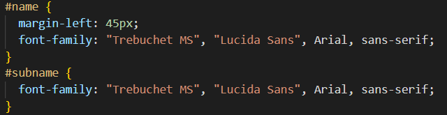
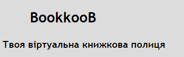
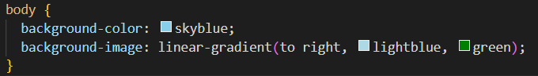
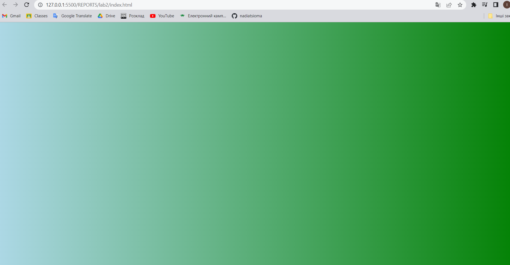
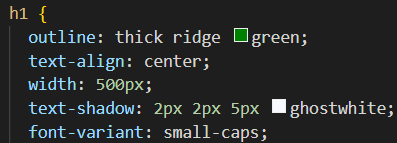
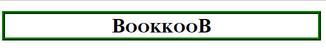
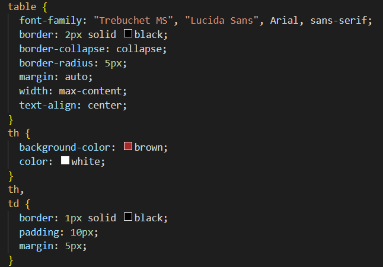
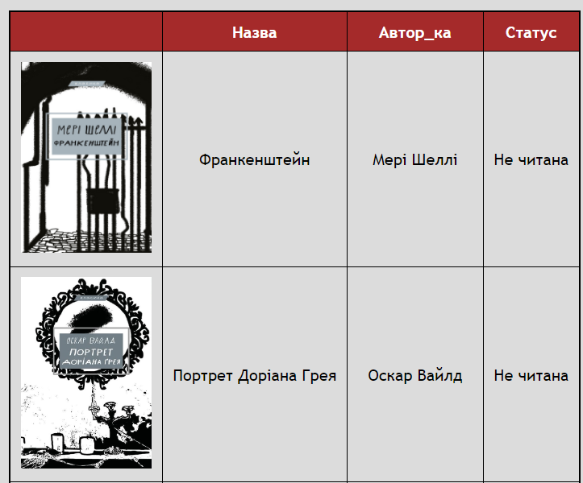
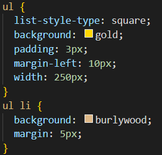
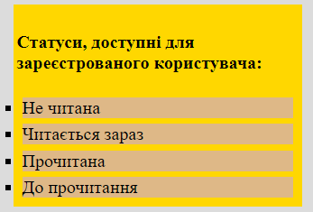

ЗВІТИ З ЛАБОРАТОРНИХ РОБІТ
ЗВІТИ З ЛАБОРАТОРНИХ РОБІТЗ ДИСЦИПЛІНИ "WEB-ОРІЄНТОВАНІ ТЕХНОЛОГІЇ.
ОСНОВИ FRONTEND ТА BACKEND РОЗРОБОК"
Бригада №32
Студентка: ІО-01 Цьома Надія
ЗВІТИ З ЛАБОРАТОРНИХ РОБІТ| Лабораторна робота №1 | Лабораторна робота №2 | Лабораторна робота №3 | Лабораторна робота №4 | Лабораторна робота №5 | Лабораторна робота №6 | Лабораторна робота №7 | Лабораторна робота №8 | Лабораторна робота №9 |
| Тема, мета і місце розташування |
| Способи підключення стилів |
| Селектори |
| CSS: шрифти, текст, таблиці, фони, контур, списки, CSS просунутий |
| Висновки |
CSS-код встановлює шрифт для тексту за допомогою селектора ідентифікатора. У цьому випадку вказано, що використовується шрифт "Trebuchet MS", якщо він доступний на пристрої користувача, а якщо ні - використається шрифт "Lucida Sans". Якщо недоступні обидва шрифти, тоді буде застосований шрифт Arial, а у разі його недоступності буде використано будь-який шрифт з сімейства "sans-serif".
 CSS-код встановлює для елементу body лінійний блакитно-зелений градієнт. Для браузерів, що не підтримують градіент буде використаний колір "skyblue".
 Контур - це смуга, яка проводиться навколо елементів поза межами, щоб зробити елемент виокремленим. За допомогою скороченої властивості контуру визначено товстий ребристий зелений контур.
 Для таблиць CSS-код задає товщину, тип та колір меж таблиці, фон та колір тексту. Визначення положення таблиці та всіх елементів внутрішній елементів.
 Виконана стилізація списків за допомогою кольорів.
 